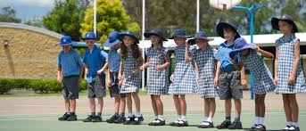
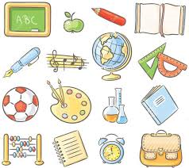

Primary School Ireland

Primary School:St Johns Girls National
Address:Ballea Road
Year:2003-2005, 2008-2011
Primary School Australia
Primary School:Jubilee, Australia
Address:Gold Coast
Year:2005-2008
Secondary School
Secondary School: Carrigaline Community
Address: Waterpark, Carrigaline, Cork
Year: 2011-2017